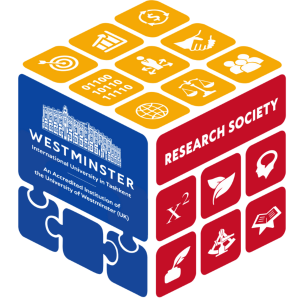
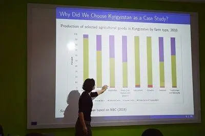
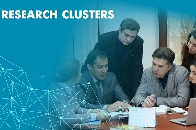
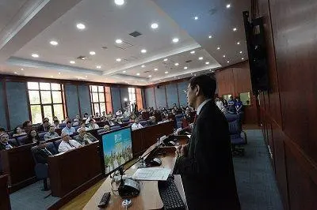

Research Impact
Since its founding in 2002, WIUT scholars and students have engaged in research in Uzbekistan, Central Asia, and throughout the world. Lately, policy reforms have multiplied the need to support the government and private sector decision-making with evidence from solid research. With a strong independent voice, WIUT is the choice of many organizations when they need quality analysis and recommendations.

Research Publications

Research Seminars

Research Clusters

Research Events